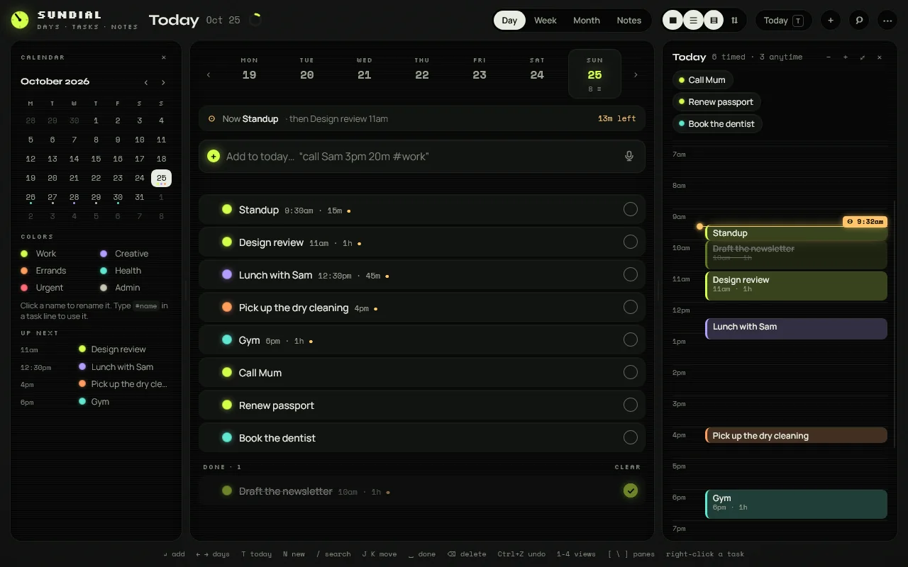
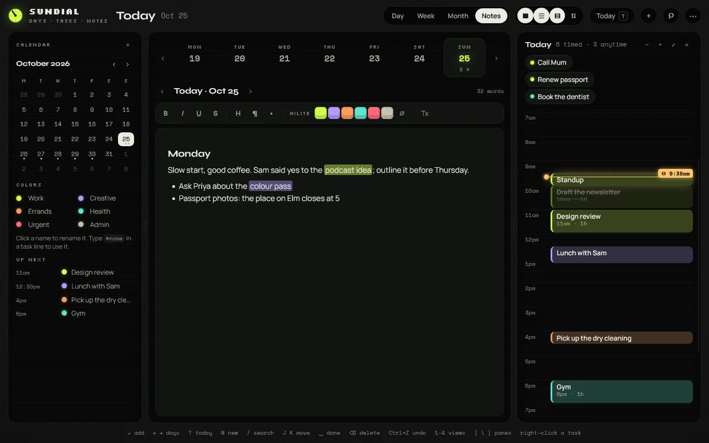
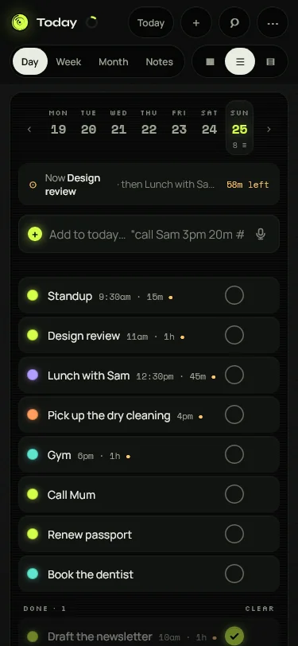

◐ SUNDIALBETA
Days, tasks and notes. Yours.
Sundial is a calendar, to-do and daily-notes app for Windows and Linux, and the same app runs in your browser. Your data lives on your own device. Sync between devices is optional and end-to-end encrypted, on a server in Switzerland. Sundial is in beta.
Windows will warn once because the app is not signed yet: More info, then Run anyway.Linux: rpm for Fedora and openSUSE, deb for Ubuntu, Mint and Debian, AppImage for anything else. The AppImage updates itself.


